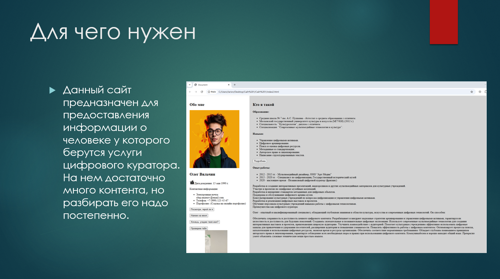

Дата рождения: 15 мая 1990 г.
Контактная информация:

Презентация
Культурологическое образование позволяет глубоко понимать контекст произведений искусства, исторических артефактов и мультимедиа-контента, что важно для создания интересных и значимых выставок, лекций и мероприятий.
Специализация по мультимедийным технологиям поможет эффективно использовать цифровые инструменты для популяризации культурного наследия, создания виртуальных туров, интерактивных инсталляций и других инновационных решений.
Опыт участия в организации мероприятий и акциях показывает умение планировать события, управлять временем и ресурсами, взаимодействовать с командой и партнерами.
Постоянная практика общения с людьми через волонтерство и учебные проекты развивает способность выстраивать коммуникацию с разными целевыми группами, адаптироваться к различным интересам аудитории.
Научный подход, полученный в процессе написания диплома и проведения исследований, пригодится для поиска новых идей, анализа трендов и разработки стратегий развития проектов.
Работа над культурологическими проектами требует креативного подхода, который необходим для успешного продвижения и презентации цифрового контента.